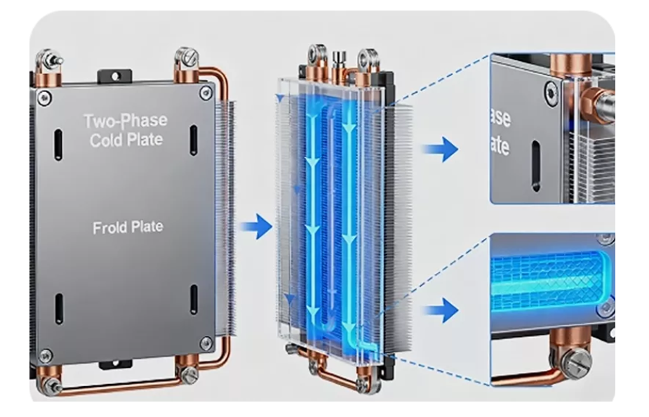
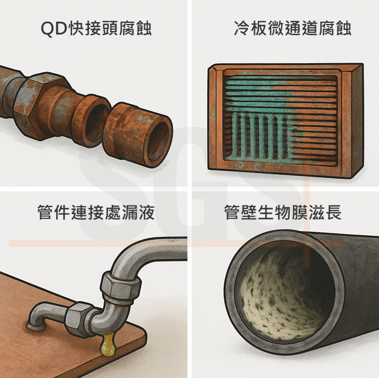
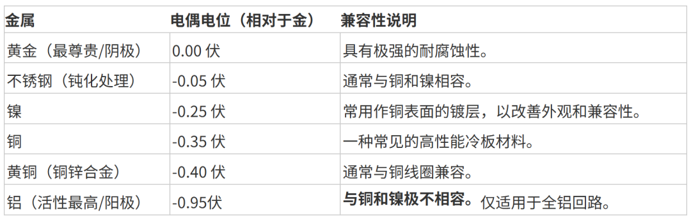
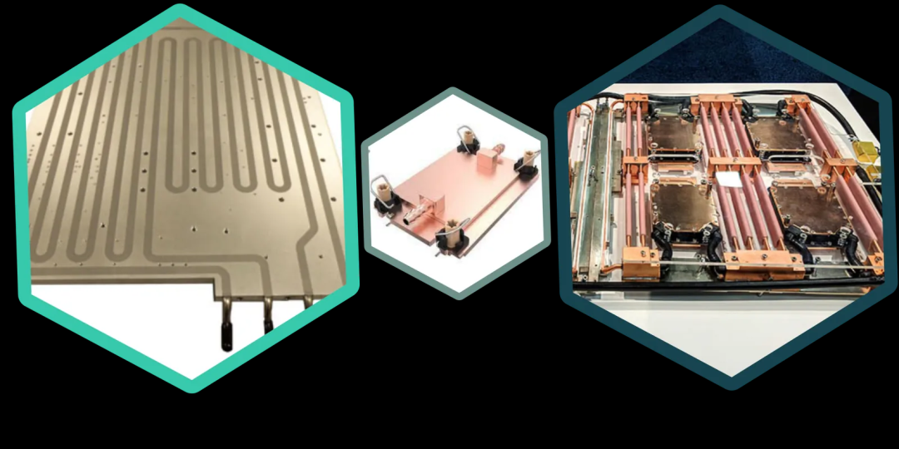
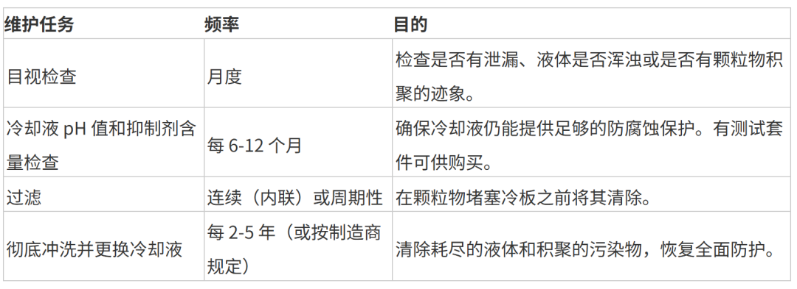

进群：“液冷群” 请加微信18158711612，备注对应群名称！
液冷板最常见的故障模式包括腐蚀、碎屑或生物滋生造成的堵塞，以及密封件、接头或焊缝处的机械故障，这些故障通常会导致冷却液泄漏。预防这些问题的关键在于三个核心原则：确保冷却回路中所有材料的兼容性；选择并妥善维护含有合适抑制剂的正确冷却液；以及严格遵守安装和系统设计规范。通过积极主动地解决这些问题，您可以显著提高任何液冷系统的可靠性和使用寿命，从而保护关键电子元件免受灾难性的热故障和液体损坏。
液冷板是高性能散热管理的核心，对于散发电力电子器件、CPU、GPU 以及其他高密度组件产生的巨大热量至关重要，其应用范围涵盖数据中心、电动汽车和医疗设备等众多行业。虽然这些系统非常有效，但并非万无一失。一旦发生故障，尤其是冷却液泄漏，后果可能不堪设想。了解常见的故障模式是构建真正稳健可靠的液冷解决方案的第一步。本文将深入探讨液冷板故障的成因、原因和解决方法，并提供专家策略，确保您的系统在其预期寿命内完美运行。

液冷板的主要失效模式有哪些？
液冷板的故障大致可分为三类：化学降解（腐蚀）、物理堵塞和机械故障。虽然冷却液泄漏通常是最明显的症状，但它往往是这些潜在问题之一随着时间推移而逐渐发展的结果。
腐蚀：热性能的隐形杀手
腐蚀是一种电化学过程，会使金属性能下降，可以说是液冷回路中最隐蔽的故障模式。它不仅会削弱冷板的结构完整性，导致泄漏，而且腐蚀产物还会造成系统其他部位的堵塞。常见的腐蚀类型有很多种。
电偶腐蚀：这是混合金属液冷系统中最为臭名昭著的腐蚀形式。当两种不同的金属（例如铜和铝）在电解质（冷却液）存在下接触时，就会发生电偶腐蚀。活性较高的金属（铝）作为阳极，腐蚀速度更快；而活性较低的金属（铜）则作为阴极。这会导致铝制部件（例如散热器或冷板本身）迅速出现针孔泄漏。
点蚀和缝隙腐蚀：这是一种局部腐蚀，会导致金属表面出现细小的孔洞或“凹坑”。它通常是由金属表面的微小缺陷或冷却液化学性质可能变得具有腐蚀性的停滞区域（缝隙）引发的。随着时间的推移，这些凹坑会穿透整个冷板壁，最终导致泄漏。
冲蚀腐蚀：这种失效模式是机械磨损和化学侵蚀共同作用的结果。它发生在流体流速高或湍流剧烈的区域，例如冷板流道内的急弯或狭窄处。高速流动的流体剥离金属表面的保护性钝化层，使未经钝化的金属暴露在外，容易受到冷却液的腐蚀。这会形成冲蚀和腐蚀的恶性循环，并迅速磨损通道壁。
堵塞和阻塞：阻碍冷却液流动
冷板的效能完全取决于冷却液的稳定流动。一旦冷却液流动受阻，散热性能就会急剧下降，部件温度甚至可能飙升至危险的程度。堵塞是一个常见但可预防的问题。
造成堵塞的主要来源包括制造过程中残留的颗粒物（例如金属屑、焊剂残留物）、不稳定或老化的冷却液中析出的缓蚀剂以及电偶腐蚀产生的副产物。另一个主要因素是生物污染，即细菌和藻类在系统中繁殖。它们在冷板内表面形成生物膜，这不仅会限制流动，还会导致微生物腐蚀（MIC）。
机械故障和泄漏：最显而易见的威胁
腐蚀和堵塞是渐进的过程，而机械故障则可能突然发生，并且是大多数泄漏的直接原因。这些故障通常发生在冷却回路的接口和连接处。
密封件和垫片老化：许多冷板使用 O 形圈或垫片来密封不同部件或连接到更大的冷却回路。这些密封件会因与冷却液的化学不相容（例如，将 EPDM 密封件与碳氢化合物基冷却液一起使用）、过高的温度或简单的老化而老化。硬化、脆化或膨胀的密封件会失去其维持压力的能力，导致缓慢滴漏或严重泄漏。
接头和连接处泄漏：螺纹接头泄漏非常常见，几乎都是由于安装不当造成的。过度拧紧接头会导致冷板上的端口开裂或密封件变形，而拧紧不足则无法产生足够的压缩力以形成有效的密封。振动也会导致接头随着时间的推移而松动。
裂纹和断裂：虽然优质冷板出现裂纹的情况较少见，但制造缺陷（例如，钎焊或焊接接头不良）或过大的机械应力也可能导致裂纹的产生。热循环（即系统反复加热和冷却）会导致应力疲劳，尤其是在不同热膨胀系数的材料粘合处。
液冷板为何失效？
揭示根本原因
材料不相容性：灾难的根源
腐蚀相关失效的最大单一原因是混合使用不相容的材料。电化学序列（根据金属的电化学势对其进行排序）是理解这一现象的关键。两种金属在电化学序列上的位置越远，当它们共用冷却液回路时，电偶腐蚀就越严重。

例如，一种常见但后果严重的组合是铜制冷板搭配铝制散热器。如果没有经过严格抑制的冷却液，铝制散热器会为了保护铜制冷板而牺牲，很快就会导致堵塞和泄漏。因此，考虑整个冷却液接触路径至关重要，包括冷板、散热器、水泵、接头和管道。

注：此表为简化表。实际电位可能因合金和冷却剂条件而异。
冷却液质量差及维护
冷却液是系统的生命线，其化学成分至关重要。使用普通的去离子水（DI水）是一个常见的错误。虽然去离子水最初是纯净的，但它具有很强的腐蚀性，会试图从回路中的金属中析出离子，从而导致腐蚀。合适的冷却液必须包含：
腐蚀抑制剂：这些是专门设计用于保护回路中金属的化学物质。它们会在金属表面形成一层钝化保护层。随着时间的推移，这些抑制剂会被消耗，必须及时补充。
杀菌剂：这些添加剂可防止藻类、细菌和真菌（生物污垢）的生长，这些物质会堵塞冷板的细小通道，导致微生物腐蚀。
基础液：通常为去离子水和/或乙二醇（丙烯或乙烯），用于防冻。
未能监测和维护冷却液——导致抑制剂浓度下降或 pH 值漂移——是造成腐蚀和堵塞的直接途径。
系统设计和安装缺陷
即使使用完美的材料和冷却液，设计或组装不当的系统也可能发生故障。旨在最大化热传递的高流速，如果控制不当，反而会导致冲蚀腐蚀。如果系统在缺乏适当阻尼的情况下承受较大的振动，会导致接头松动并产生疲劳裂纹。最后，最常见的安装错误是螺纹密封剂涂抹不当以及接头扭矩不足，这会导致立即或最终发生泄漏。
如何防止冷却液泄漏和其他故障？
预防故障需要采取积极主动的系统级方法。通过关注四个关键领域，您可以构建一个可靠性和使用寿命最高的液冷系统。
第一步：智能材料选择
防止电偶腐蚀最简单有效的策略是避免混合金属。尽可能设计仅使用单一润湿材料的系统。例如：

全铜回路：使用铜制冷板、铜或黄铜接头以及铜/黄铜散热器。这是一种常见的高性能配置。
全铝回路：使用铝制冷板和铝制散热器。这通常是一种更经济高效的解决方案，常见于汽车应用中。
如果金属混用不可避免，通常可以将钝化不锈钢或镀镍铜部件安全地集成到铜回路中。但是，如果没有高度专业化、由专业人员管理的抑制剂包，切勿在同一回路中混用铜和铝。
步骤二：选择和维护合适的冷却液
不要忽视冷却液的重要性。选择信誉良好的制造商生产的高品质预配制冷却液，并确保其适用于您系统中的金属。例如，如果您的系统包含多种金属，请使用专为混合金属环境设计的冷却液，并遵循制造商的稀释建议。
此外，还要制定定期维护计划。冷却液并非“加满即忘”的液体。随着时间的推移，抑制剂会被消耗，污染物会进入，其化学性质也会发生变化。

步骤三：细致的安装和组装
正确的组装技术是确保系统不漏水的关键。务必仔细检查接头：
使用正确的密封剂：对于锥形螺纹（例如 NPT），请使用适用于系统冷却液、温度和压力的液体螺纹密封剂或 PTFE 胶带。对于带 O 形圈的直螺纹（例如 G1/4"），请勿在螺纹上涂抹密封剂；O 形圈即可起到密封作用。
施加正确的扭矩：请遵循制造商的规格说明拧紧接头。使用扭矩扳手。过度拧紧是造成泄漏的主要原因。
确保清洁：组装前，冲洗所有部件（尤其是散热器），以清除任何制造过程中产生的碎屑。
控制振动：对水泵和风扇使用减震支架，并确保管道不受拉力或与尖锐边缘摩擦。
第四步：稳健的系统设计与验证
良好的设计能够预见并缓解潜在问题。在设计液冷回路时，应使用计算流体动力学 (CFD) 分析冷板内的流路。这有助于识别可能导致冲蚀腐蚀或沉积物堆积的高速或停滞区域。
在回路的某个位置（最好是在冷板之前）加装一个精细颗粒过滤器（约 50-100 微米），以便在杂质造成堵塞之前将其捕获。最后，在将整个系统部署到关键应用之前进行压力和泄漏测试，是至关重要的验证步骤，可以及时发现安装错误，避免造成损坏。
诊断：如何检测故障的早期迹象
对于关键任务应用，被动预防可以与主动监测相结合。这些方法可以帮助您在泄漏或过热关机发生之前很久就检测到问题。
压降监测：通过在冷板前后安装压力传感器，可以监测压差（ΔP）。ΔP 随时间逐渐增大，是冷板通道内部逐渐堵塞的明显标志。
冷却液取样与分析：定期抽取少量冷却液样本进行实验室分析，可以了解系统的运行状况。该分析可以测量 pH 值、抑制剂浓度以及溶解金属的存在情况。冷却液中铜离子或铝离子含量的增加是腐蚀发生的直接早期预警信号。
热成像：使用红外 (IR) 热像仪定期扫描被冷却的热源可以发现正在出现的问题。设备表面温度分布不均，或在持续负载下平均温度逐渐升高，都可能表明由于堵塞或流量减少导致冷却性能下降。
结论：构建可靠性基础
液冷板故障很少是偶然事件。它通常是忽视液冷可靠性三大支柱之一的结果：材料兼容性、冷却液完整性以及系统设计和安装。冷却液泄漏是最令人担忧的症状，但它本身并非故障，而是潜在腐蚀、堵塞或机械应力等问题的晚期征兆。
通过采取积极主动的策略——选择恰当的材料、将冷却液视为关键部件并要求装配精度——您可以打造出不仅性能强大而且极其可靠的热管理系统。这种可靠性基础能够保护您宝贵的电子设备，防止代价高昂的停机，并确保您的系统从投入使用到报废都能按预期运行。
免责声明：本公众号基于分享的目的转载，转载文章的版权归原作者或原公众号所有，如有涉及侵权请及时告知，我们将予以核实并删除。
扫码加入知识星球，可以获得最新、最全热管理行业最新报告！